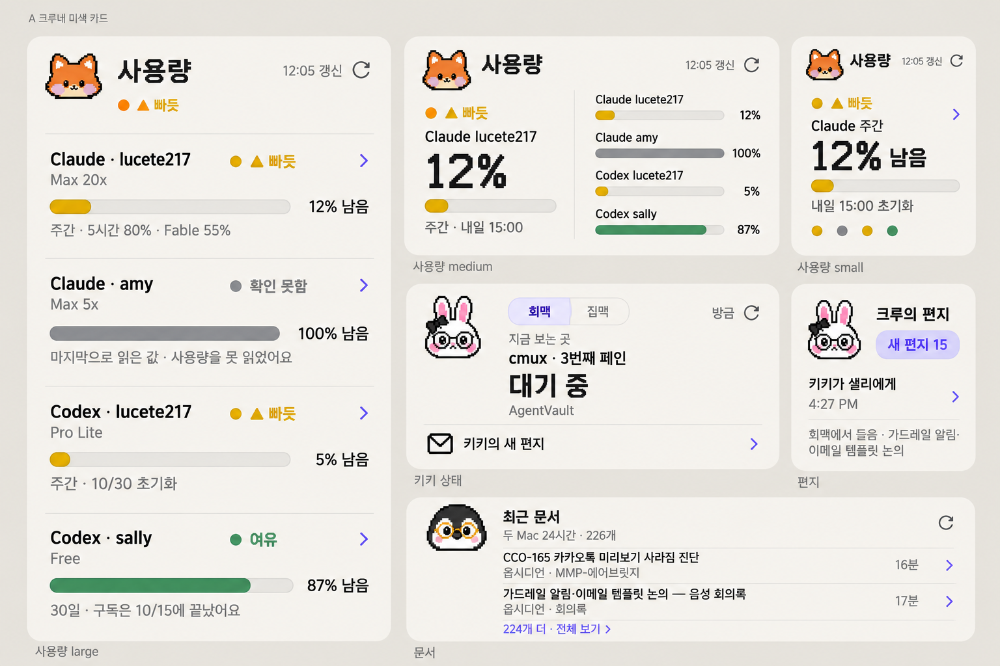
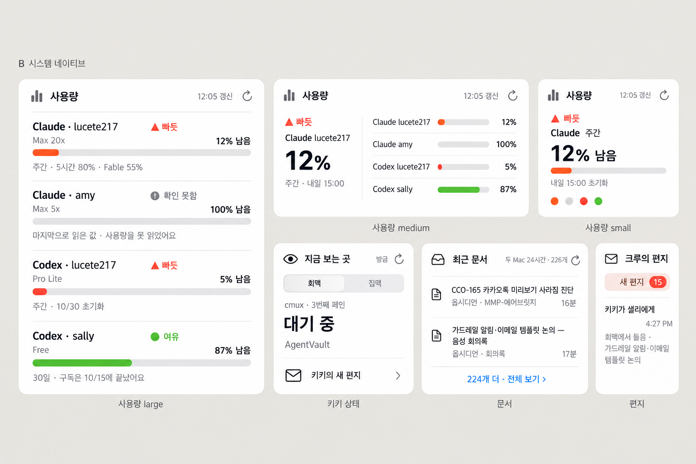
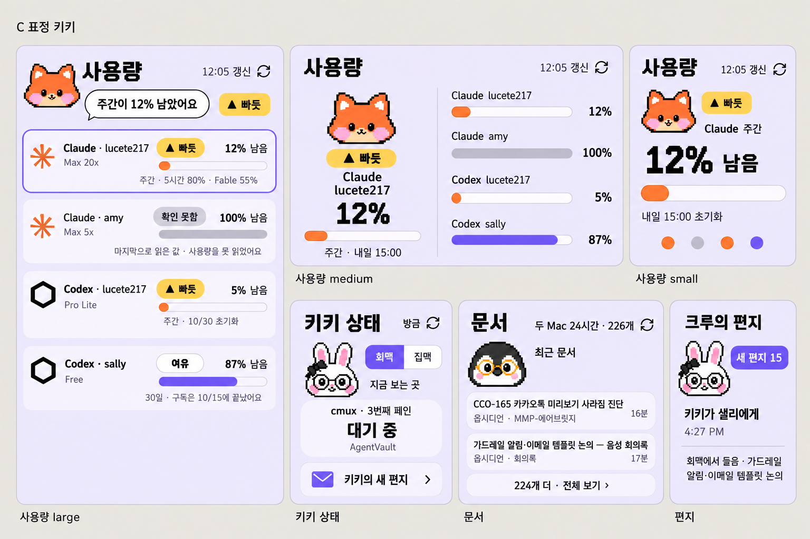
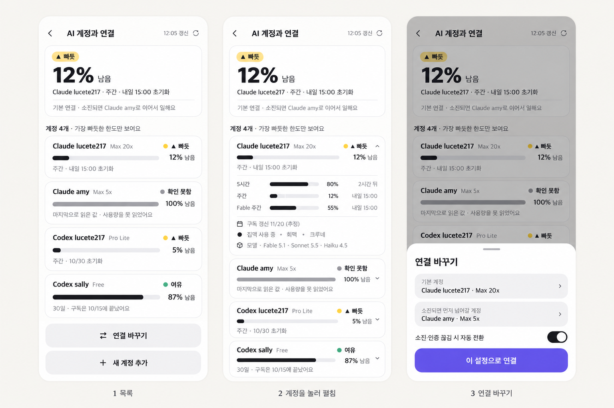
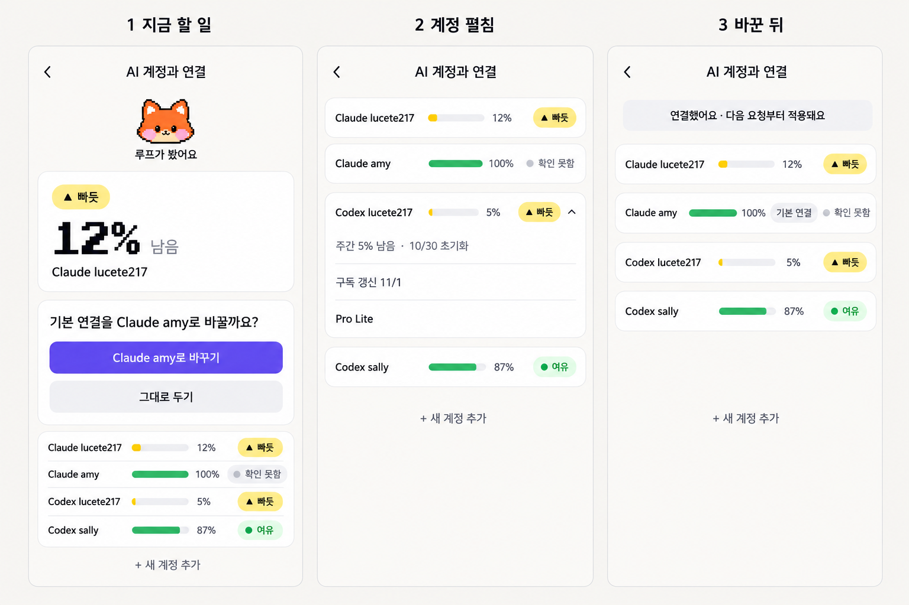

사용량 위젯·화면 시안 5장
2026년 10월 23일 12시 기준 실제 수치로 그렸습니다. 위젯은 전체 무드 세 가지, 크루네 사용량 화면은 두 가지입니다. 이미지를 누르면 크게 열립니다.
위젯 A. 크루네 미색 카드
미색 바탕에 크루 얼굴과 픽셀 숫자를 넣어 크루네 느낌을 가장 크게 살린 안입니다.

위젯 B. 시스템 네이티브
애플 위젯 지침을 그대로 따른 안입니다. 시스템 글꼴과 선 아이콘만 쓰고 색 없는 모드에서도 읽히게 했습니다. 먼저 만들 안으로 추천합니다.

위젯 C. 표정 키키
라벤더 바탕에 큰 크루 얼굴이 말을 거는 안입니다. 큰 위젯 아래가 비는 점과 보라색 막대는 손봐야 합니다.

크루네 사용량 화면 1. 목록 먼저
목록, 계정 펼침, 연결 바꾸기 시트 순서입니다. 지금 화면과 가장 가깝고 한 화면에 계정 네 개가 들어옵니다.

크루네 사용량 화면 2. 할 일 먼저
빠듯할 때 바로 다른 계정으로 바꾸도록 제안하는 안입니다. 보라색 단추는 화면당 하나만 씁니다.
